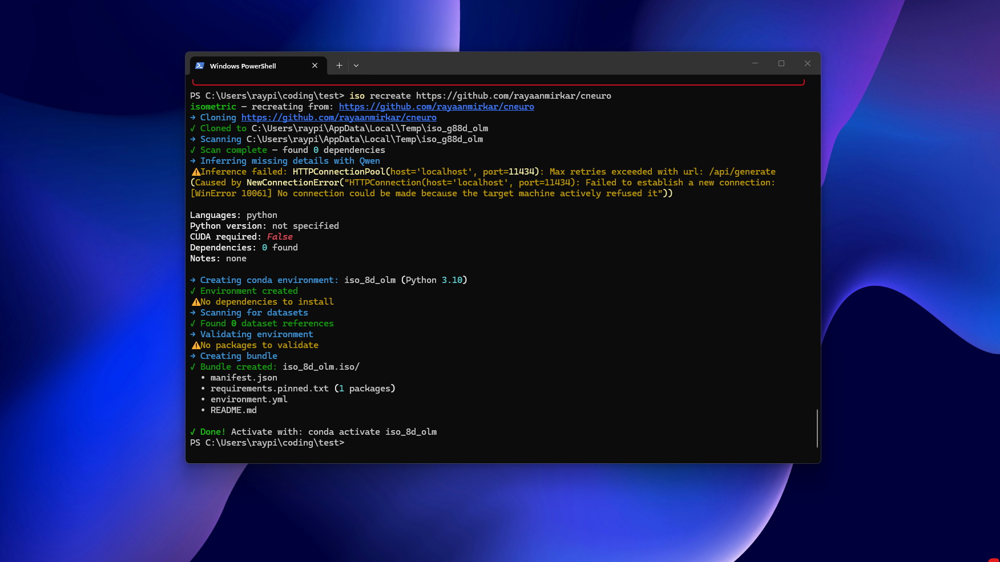
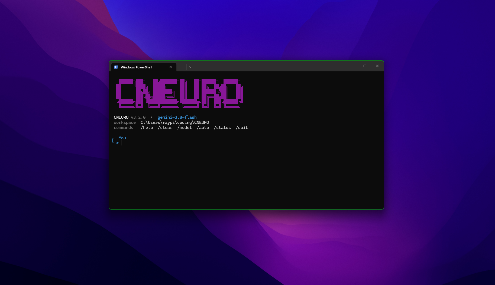

Rayaan Mirkar
Researcher working on proteomics in deep learning, spiking neural networks, and connectome-constraint drosophila olfaction
Student at the Edison High School STEM Academy in New Jersey
Contact
raymirkar [at] gmail [dot] com
Elsewhere
Linkedin GitHub

